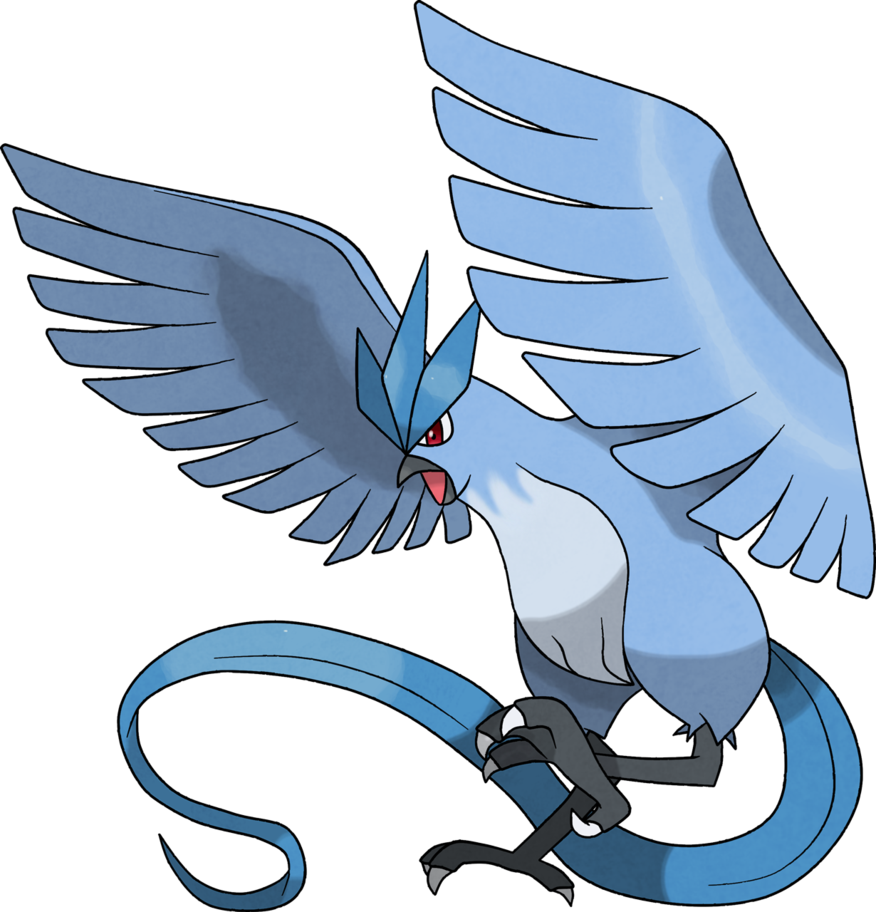
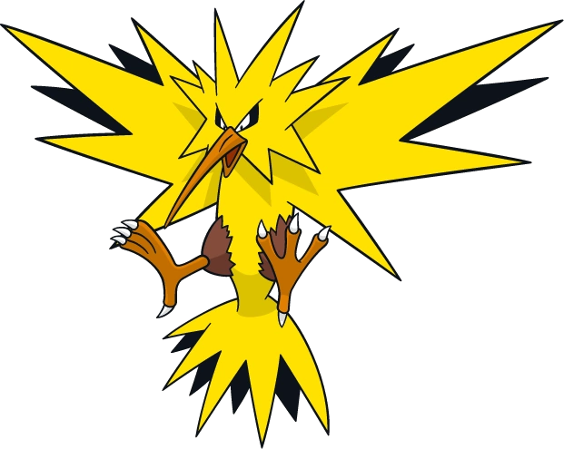
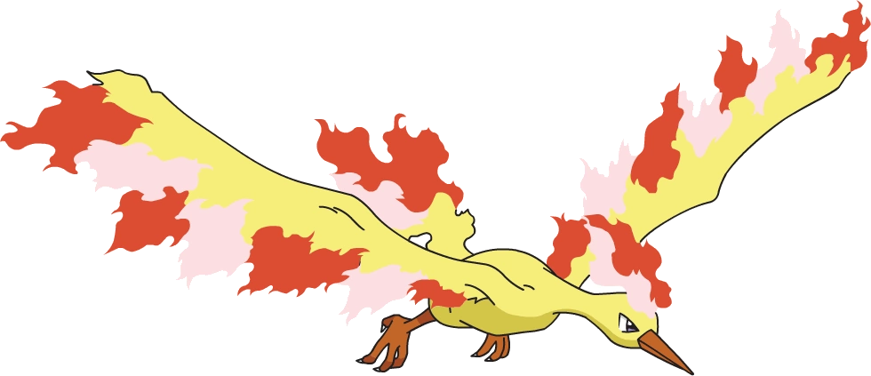

-
Articuno
HP 850
Descrição
Articuno é um pokémon pássaro lendário que pode controlar o gelo. O bater de suas asas arrepia o ar. Como resultado, é dito que quando este Pokémon voa, a neve cairá.
-
Zapdos
HP 800
Descrição
Zapdos é um Pokémon Lendário do tipo Elétrico e Voador introduzido na Geração I. Ele, Articuno e Moltres formam as Aves Lendárias de Kanto. É um Pokémon Errante.
-
Moltres
HP 900
Descrição
Moltres é conhecido como o Pokémon da Chama (Flame Pokémon), é um Pokémon Lendário, uma das três aves lendárias, junto de Articuno e Zapdos. É uma grande ave que literalmente está em chamas, sendo relacionado a uma Fênix.